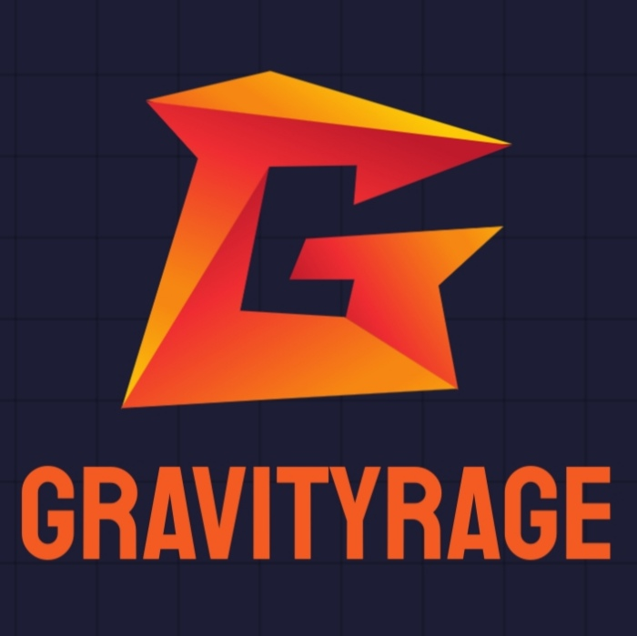

About me
Hello! I am Daniel Low, a.k.a. GraVityRagE! I am a student who is interested in web development and cybersecurity! I enjoy making websites and playing CTF (Capture The Flag) other than gaming during my free time. This website was created mainly for me to showcase my projects as well as to practise web development. Besides being able to code in Python, HTML, CSS and Javascript, I am also proficient in using Kali Linux, as well as some of the tools that are available in it, such as Burpsuite, Wireshark, Nmap, Binwalk, Gobuster, Fcrackzip, Ghidra and Netcat.